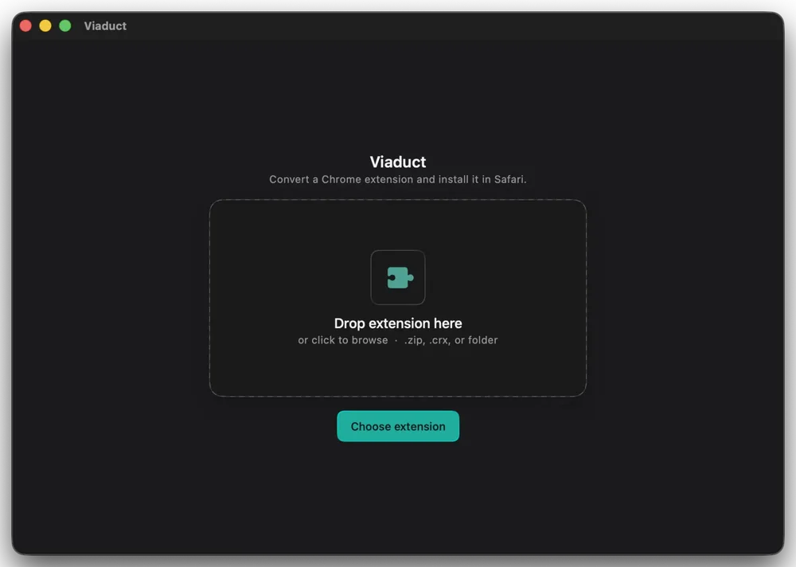
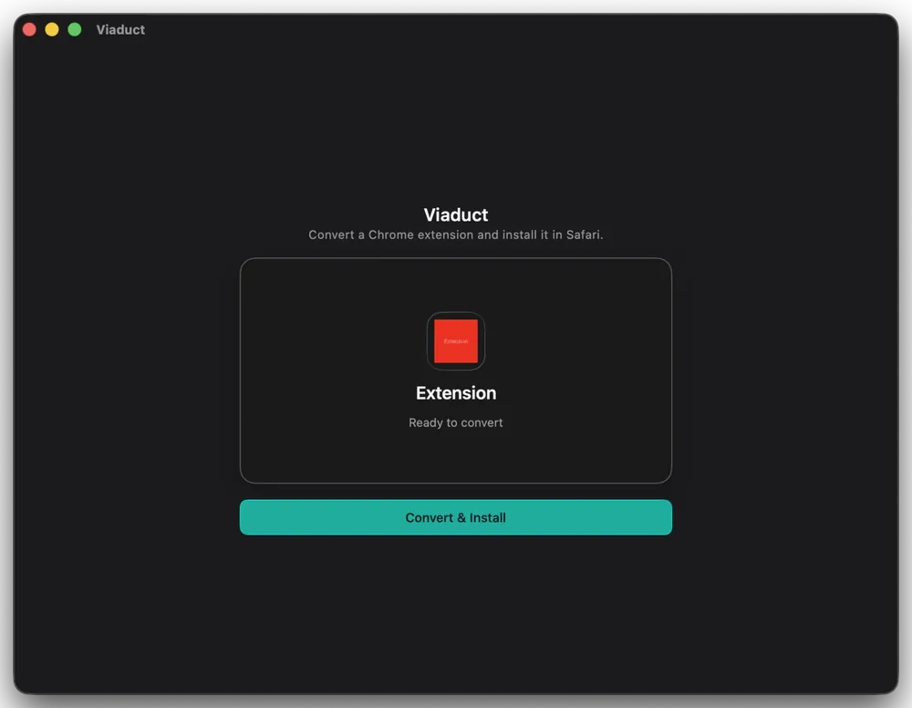
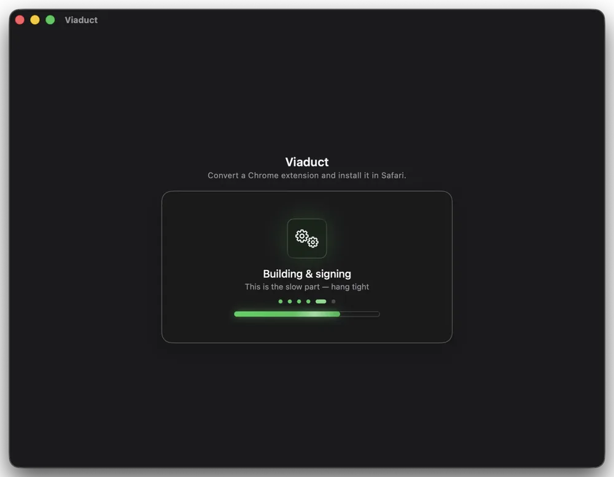
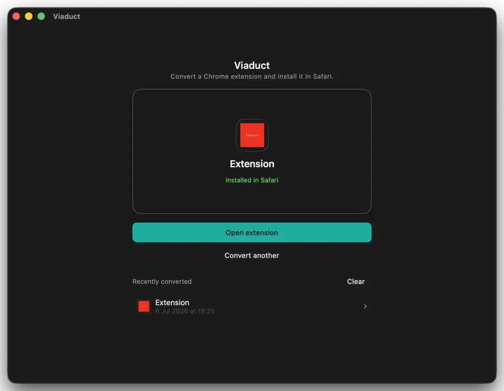
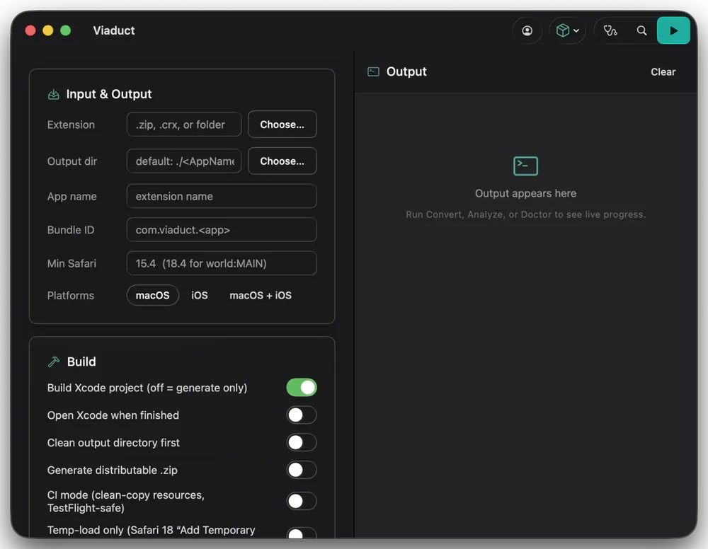

Run Chrome extensions
in Safari.
Viaduct converts any Chrome extension into a native Safari Web Extension.

One input, any format
Drop in whatever
you already have.
Five ways in, one way out. Viaduct reads any of these, then hands you a signed Safari extension with no repackaging and no manual steps.
.crx.zip“Add to Chrome” becomes “Add to Safari.”
Browse the Chrome Web Store in Safari, and the green button you know installs to Safari instead. One click; Viaduct fetches, converts, signs, and installs.
Real capture, uncut: Dark Reader installed into Safari, straight from the Chrome Web Store.
Drop. Convert. Done.
The whole Safari packaging dance, the part that normally means wrestling Xcode and Apple's command-line signer, runs behind one button.



Converting isn't the hard part. Working is.
Safari implements dozens of chrome.* APIs differently, or not at all, so a naively converted extension installs, opens, and quietly breaks. Viaduct ships a runtime layer that fixes those breaks at the source.
60+
chrome.* namespaces normalized by the runtime layer. This is the product. The scaffolding around it is table stakes.
BreaksPopup buttons go dead: background ports route by an extension id Safari reports differently.
FixedViaduct rewrites the id and normalizes the sender, so the popup reaches the background.
BreaksSilent “Load failed” on its own bundled resources: Safari's resource server is case-sensitive.
FixedViaduct normalizes the casing per call site.
BreaksSafari omits onInstalled, the lifecycle enums, and parts of self.registration — the worker throws at load and dies.
FixedViaduct backfills them.
BreaksSafari exposes chrome.* as immutable native objects, so extensions that patch them crash at startup.
FixedViaduct thaws and republishes them.
Under the hood
A precision instrument, not a hack.
Native conversion, done properly. No Chromium sidecar, no expiring hacks, no silent failures.
Keeps Safari's battery life
Converted extensions run inside Safari's native engine, not a second Chromium process running in the background. Faster, and far easier on your battery.
2
engines running if you keep Chrome around for one extension
1
with Viaduct. The extension lives inside Safari
Auto-resign signingPro
Free Apple signatures lapse every ~7 days. Pro silently re-signs before they do, so your extensions never vanish.
Self-updating engine
The converter keeps itself up to date. New fixes arrive without you reinstalling anything.
Auto-updating extensionsPro
Installed an extension from the Chrome Web Store? When it ships a new version, Pro rebuilds and reinstalls it for you, checked weekly. Off by default.
MV2 & MV3 aware
Detects the manifest version and reports incompatibilities before converting. No silent surprises.
Every option exposed
Output directory, bundle id, app name, macOS or iOS or both, signing choices, plus Analyze and Doctor checks. Developer mode hides nothing.
Simple by default. Deep when you want it.

Start free. Go Pro when it sticks.
Convert your first two extensions free. Pro lifts the cap and keeps them alive.
Free
Try itGet the app, convert 2 extensions.
- The full native macOS app
- Convert up to 2 extensions
- “Add to Safari” Web Store button
- No auto-resigning — extensions lapse in ~7 days
Viaduct Pro
UnlimitedOne-time. Yours forever, with updates.
- Unlimited conversions
- Auto-resigning, so extensions never lapse
- Everything in Free, plus all updates
Requires Xcode for conversion. Node comes bundled in the app. Unsandboxed, notarized direct download.
Questions
Will my Chrome extension actually work?
Most do. Before converting, Viaduct checks the extension and reports anything that won't work, so there are no silent surprises. A few things (like some OAuth sign-in flows) can't survive conversion, and it tells you honestly when that's the case.
Do I need to know how to code?
No. Drop an extension in, get it in Safari. The only thing to install is Xcode (free). Apple requires it for signing, and Viaduct drives it for you.
Why does it keep my battery better than Chrome?
The converted extension runs inside Safari's own engine instead of a separate Chromium process humming in the background. One less browser engine running means less CPU and longer battery life.
What's the difference between Free and Pro?
Free gives you 2 conversions, and they lapse after about a week. Pro is unlimited and keeps your extensions signed so they never disappear. One-time $19, yours forever.
Why isn't this on the Mac App Store?
The build tools Viaduct drives aren't allowed inside the App Store sandbox, so it ships as a notarized direct download instead. Same Apple notarization, just outside the store.
Your extensions.
Safari's battery life.
Stop choosing between the extensions you love and the browser that's kind to your Mac.
Get Viaduct Pro · $19